Variograms
Empirical variograms
Variograms are widely used in geostatistics due to their intimate connection with (co)variance and visual interpretability. The following video explains the concept in detail:
The Matheron's estimator of the empirical variogram is given by
\[\widehat{\gamma_M}(h) = \frac{1}{2|N(h)|} \sum_{(i,j) \in N(h)} (z_i - z_j)^2\]
where $N(h) = \left\{(i,j) \mid ||\p_i - \p_j|| = h\right\}$ is the set of pairs of locations at a distance $h$ and $|N(h)|$ is the cardinality of the set. Alternatively, the robust Cressie's estimator is given by
\[\widehat{\gamma_C}(h) = \frac{1}{2}\frac{\left\{\frac{1}{|N(h)|} \sum_{(i,j) \in N(h)} |z_i - z_j|^{1/2}\right\}^4}{0.457 + \frac{0.494}{|N(h)|} + \frac{0.045}{|N(h)|^2}}\]
Both estimators are available and can be used with general distance functions in order to for example:
- Model anisotropy (e.g. ellipsoid distance)
- Perform simulation on sphere (e.g. haversine distance)
Please see Distances.jl for a complete list of distance functions.
The high-performance estimation procedure implemented in the framework can consider all pairs of locations regardless of direction (ominidirectional) or a specified partition of the geospatial data (e.g. directional, planar).
(Omini)directional variograms
GeoStatsFunctions.variogram — Function
variogram(geotable, [vars]; [options])Computes the empirical (a.k.a. experimental) variogram for variables vars stored in the geotable. The variables can be specified by their names or indices, and all variables are used by default.
variogram(partition, [vars]; [options])Alternatively, computes the empirical (cross-)variogram of the geospatial partition as described in Hoffimann & Zadrozny 2019.
Options
- dir - direction for directional variogram (default to
nothing) - dirtol - tolerance for directional variogram (default to
0.5u"m") - maxlag - maximum lag in length units (default to 1/2 of minimum side of bounding box)
- nlags - number of lags (default to
20) - distance - custom distance function (default to
Euclideandistance) - estimator - variogram estimator (default to
:matheronestimator) - lagsearch - lag search method (default to
:ball)
Available estimators:
:matheron- simple estimator based on squared differences:cressie- robust estimator based on 4th power of differences
Available lag search methods:
:full- loop over all pairs of points available:ball- loop over all points within maximum lag
All implemented lag search methods produce the exact same result. The :ball method is considerably faster when the maximum lag is much smaller than the bounding box of the domain.
See also variogramsurface.
References
Chilès, JP and Delfiner, P. 2012. Geostatistics: Modeling Spatial Uncertainty
Webster, R and Oliver, MA. 2007. Geostatistics for Environmental Scientists
Hoffimann, J and Zadrozny, B. 2019. Efficient variography with partition variograms
Consider the following example image:
using GeoStatsImages
img = geostatsimage("Gaussian30x10")
img |> viewer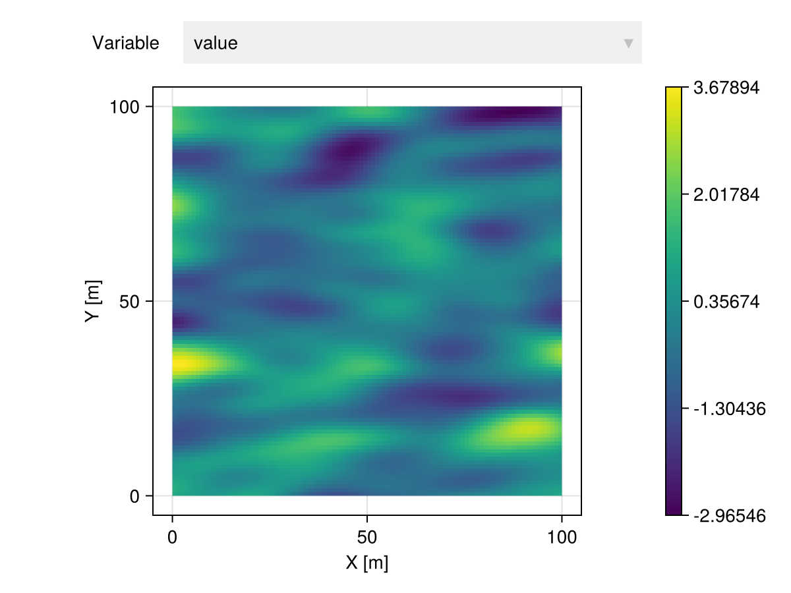
We can estimate ominidirectional variograms, which consider pairs of points along all directions:
g = variogram(img)
funplot(g)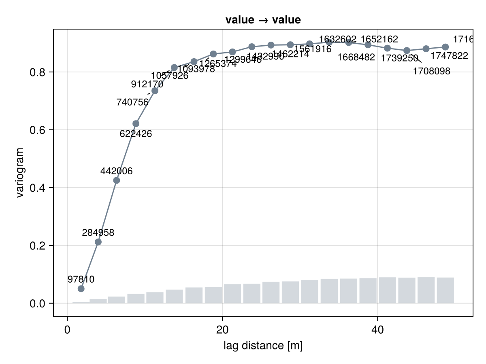
or directional variograms along specific directions:
gₕ = variogram(img, dir = (1.0, 0.0))
gᵥ = variogram(img, dir = (0.0, 1.0))
fig = funplot(gₕ, color = "salmon")
funplot!(fig, gᵥ)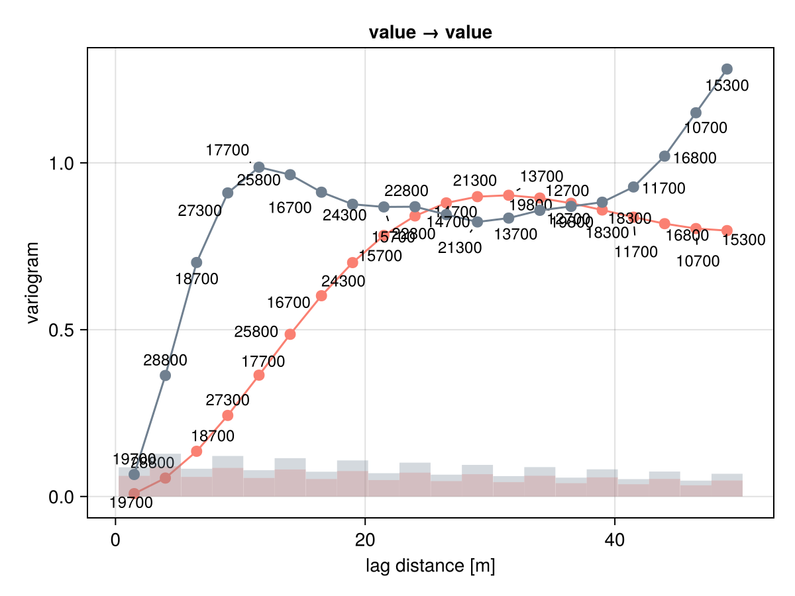
Variogram surfaces
GeoStatsFunctions.variogramsurface — Function
variogramsurface(geotable, [vars];
normal=Vec(0,0,1), nangs=50,
planetol=0.5u"m", dirtol=0.5u"m",
[options])Given a normal direction, estimate the (cross-)variogram of variables vars stored in geotable along all directions in the corresponding plane of variation.
Optionally, specify the tolerance planetol in length units for the plane partition, the tolerance dirtol in length units for the direction partition, the number of angles nangs in the plane, and forward the options to the underlying variogram calls.
g = variogramsurface(img)
surfplot(g)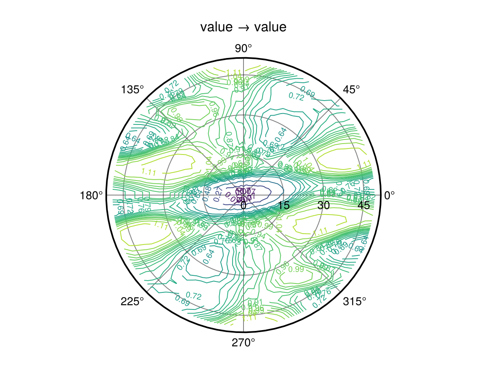
Theoretical variograms
We provide various theoretical variograms from the literature, which can be combined with ellipsoid distances to model geometric anisotropy and with scalars or matrix coefficients to express multivariate relations. Please check the Functions section for more details.
In an intrinsic isotropic model, the variogram is only a function of the distance between any two given points $\p_1,\p_2 \in \R^m$:
\[\gamma(\p_1,\p_2) = \gamma(||\p_1 - \p_2||) = \gamma(h)\]
Under the additional assumption of 2nd-order stationarity, the well-known covariance is directly related via $\gamma(h) = \cov(0) - \cov(h)$. This package implements a few commonly used as well as other more exotic variogram models. Most of these models share a set of default parameters (e.g. sill=1.0, range=1.0), which can be set with keyword arguments.
Gaussian
\[\gamma(h) = (s - n) \left[1 - \exp\left(-3\left(\frac{h}{r}\right)^2\right)\right] + n \cdot \1_{(0,\infty)}(h)\]
GeoStatsFunctions.GaussianVariogram — Type
GaussianVariogram(; range, sill, nugget)A Gaussian variogram with range in length units, and sill and nugget contributions.
GaussianVariogram(; ranges, rotation, sill, nugget)Alternatively, use multiple ranges and rotation matrix to construct an anisotropic model.
GaussianVariogram(ball; sill, nugget)Alternatively, use a custom metric ball.
Examples
# isotropic model
GaussianVariogram(range=2.0m)
# anisotropic model
GaussianVariogram(ranges=(1.0m, 2.0m))funplot(GaussianVariogram())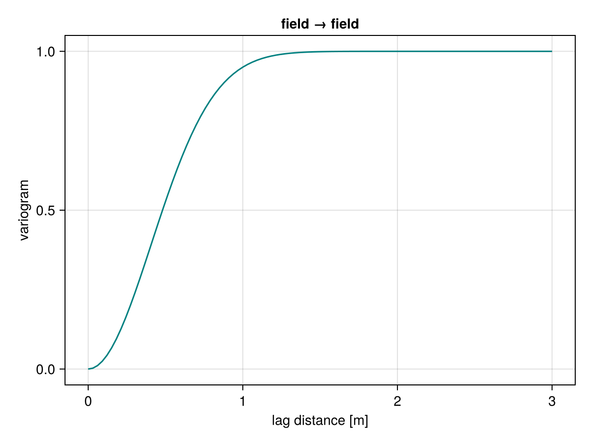
Spherical
\[\gamma(h) = (s - n) \left[\left(\frac{3}{2}\left(\frac{h}{r}\right) - \frac{1}{2}\left(\frac{h}{r}\right)^3\right) \cdot \1_{(0,r)}(h) + \1_{[r,\infty)}(h)\right] + n \cdot \1_{(0,\infty)}(h)\]
GeoStatsFunctions.SphericalVariogram — Type
SphericalVariogram(; range, sill, nugget)A spherical variogram with range in length units, and sill and nugget contributions.
SphericalVariogram(; ranges, rotation, sill, nugget)Alternatively, use multiple ranges and rotation matrix to construct an anisotropic model.
SphericalVariogram(ball; sill, nugget)Alternatively, use a custom metric ball.
Examples
# isotropic model
SphericalVariogram(range=2.0m)
# anisotropic model
SphericalVariogram(ranges=(1.0m, 2.0m))funplot(SphericalVariogram())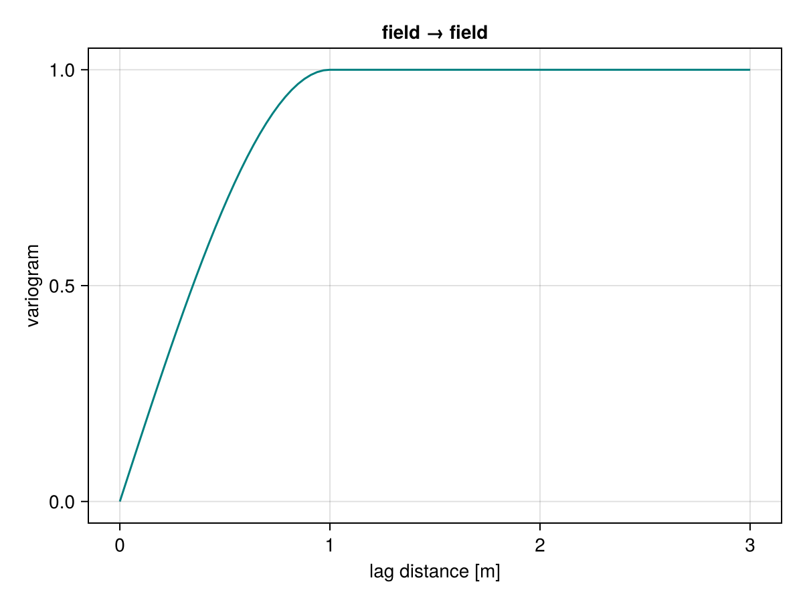
Exponential
\[\gamma(h) = (s - n) \left[1 - \exp\left(-3\left(\frac{h}{r}\right)\right)\right] + n \cdot \1_{(0,\infty)}(h)\]
GeoStatsFunctions.ExponentialVariogram — Type
ExponentialVariogram(; range, sill, nugget)An exponential variogram with range in length units, and sill and nugget contributions.
ExponentialVariogram(; ranges, rotation, sill, nugget)Alternatively, use multiple ranges and rotation matrix to construct an anisotropic model.
ExponentialVariogram(ball; sill, nugget)Alternatively, use a custom metric ball.
Examples
# isotropic model
ExponentialVariogram(range=2.0m)
# anisotropic model
ExponentialVariogram(ranges=(1.0m, 2.0m))funplot(ExponentialVariogram())Matern
\[\gamma(h) = (s - n) \left[1 - \frac{2^{1-\nu}}{\Gamma(\nu)} \left(\sqrt{2\nu}\ 3\left(\frac{h}{r}\right)\right)^\nu K_\nu\left(\sqrt{2\nu}\ 3\left(\frac{h}{r}\right)\right)\right] + n \cdot \1_{(0,\infty)}(h)\]
GeoStatsFunctions.MaternVariogram — Type
MaternVariogram(; range, sill, nugget, order)A Matérn variogram with range in length units, sill and nugget contributions, and order of Bessel function.
MaternVariogram(; ranges, rotation, sill, nugget, order)Alternatively, use multiple ranges and rotation matrix to construct an anisotropic model.
MaternVariogram(ball; sill, nugget, order)Alternatively, use a custom metric ball.
Examples
# isotropic model
MaternVariogram(range=2.0m)
# anisotropic model
MaternVariogram(ranges=(1.0m, 2.0m))funplot(MaternVariogram())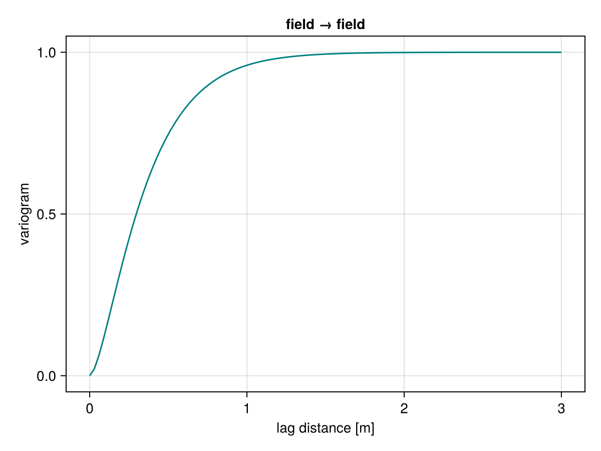
Cubic
\[\gamma(h) = (s - n) \left[\left(7\left(\frac{h}{r}\right)^2 - \frac{35}{4}\left(\frac{h}{r}\right)^3 + \frac{7}{2}\left(\frac{h}{r}\right)^5 - \frac{3}{4}\left(\frac{h}{r}\right)^7\right) \cdot \1_{(0,r)}(h) + \1_{[r,\infty)}(h)\right] + n \cdot \1_{(0,\infty)}(h)\]
GeoStatsFunctions.CubicVariogram — Type
CubicVariogram(; range, sill, nugget)A cubic variogram with range in length units, and sill and nugget contributions.
CubicVariogram(; ranges, rotation, sill, nugget)Alternatively, use multiple ranges and rotation matrix to construct an anisotropic model.
CubicVariogram(ball; sill, nugget)Alternatively, use a custom metric ball.
Examples
# isotropic model
CubicVariogram(range=2.0m)
# anisotropic model
CubicVariogram(ranges=(1.0m, 2.0m))funplot(CubicVariogram())PentaSpherical
\[\gamma(h) = (s - n) \left[\left(\frac{15}{8}\left(\frac{h}{r}\right) - \frac{5}{4}\left(\frac{h}{r}\right)^3 + \frac{3}{8}\left(\frac{h}{r}\right)^5\right) \cdot \1_{(0,r)}(h) + \1_{[r,\infty)}(h)\right] + n \cdot \1_{(0,\infty)}(h)\]
GeoStatsFunctions.PentaSphericalVariogram — Type
PentaSphericalVariogram(; range, sill, nugget)A pentaspherical variogram with range in length units, and sill and nugget contributions.
PentaSphericalVariogram(; ranges, rotation, sill, nugget)Alternatively, use multiple ranges and rotation matrix to construct an anisotropic model.
PentaSphericalVariogram(ball; sill, nugget)Alternatively, use a custom metric ball.
Examples
# isotropic model
PentaSphericalVariogram(range=2.0m)
# anisotropic model
PentaSphericalVariogram(ranges=(1.0m, 2.0m))funplot(PentaSphericalVariogram())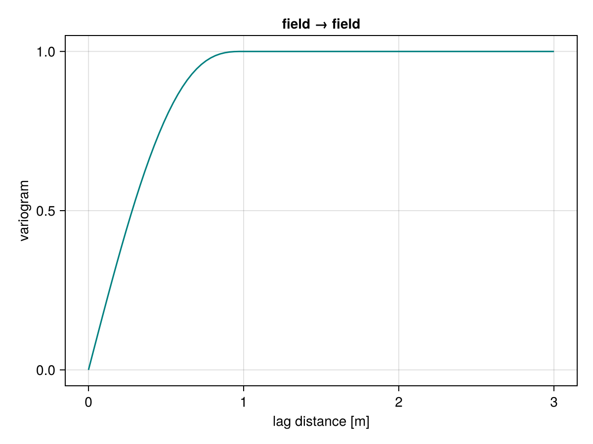
Sine hole
\[\gamma(h) = (s - n) \left[1 - \frac{\sin(\pi h / r)}{\pi h / r}\right] + n \cdot \1_{(0,\infty)}(h)\]
GeoStatsFunctions.SineHoleVariogram — Type
SineHoleVariogram(; range, sill, nugget)A sinehole variogram with range in length units, and sill and nugget contributions.
SineHoleVariogram(; ranges, rotation, sill, nugget)Alternatively, use multiple ranges and rotation matrix to construct an anisotropic model.
SineHoleVariogram(ball; sill, nugget)Alternatively, use a custom metric ball.
Examples
# isotropic model
SineHoleVariogram(range=2.0m)
# anisotropic model
SineHoleVariogram(ranges=(1.0m, 2.0m))funplot(SineHoleVariogram())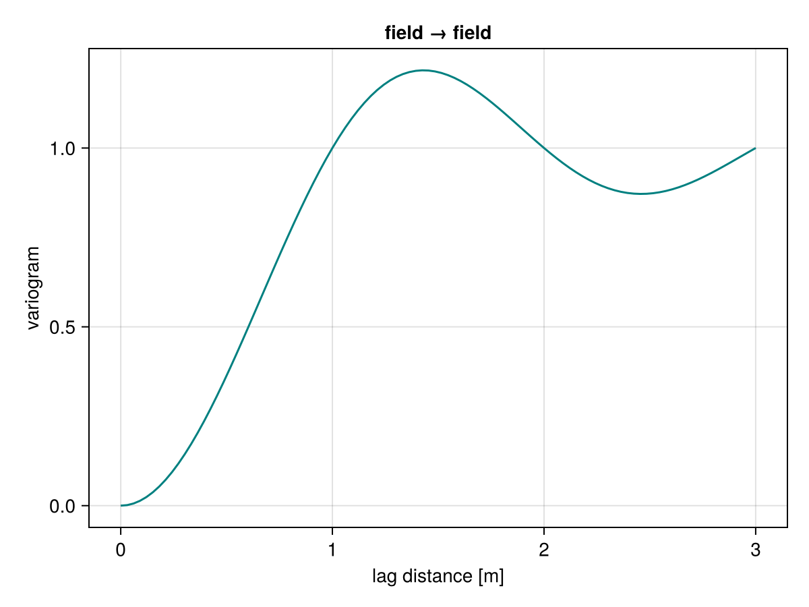
Circular
\[\gamma(h) = (s - n) \left[\left(1 - \frac{2}{\pi} \cos^{-1}\left(\frac{h}{r}\right) + \frac{2h}{\pi r} \sqrt{1 - \frac{h^2}{r^2}} \right) \cdot \1_{(0,r)}(h) + \1_{[r,\infty)}(h)\right] + n \cdot \1_{(0,\infty)}(h)\]
GeoStatsFunctions.CircularVariogram — Type
CircularVariogram(; range, sill, nugget)A circular variogram with range in length units, and sill and nugget contributions.
CircularVariogram(; ranges, rotation, sill, nugget)Alternatively, use multiple ranges and rotation matrix to construct an anisotropic model.
CircularVariogram(ball; sill, nugget)Alternatively, use a custom metric ball.
Examples
# isotropic model
CircularVariogram(range=2.0m)
# anisotropic model
CircularVariogram(ranges=(1.0m, 2.0m))funplot(CircularVariogram())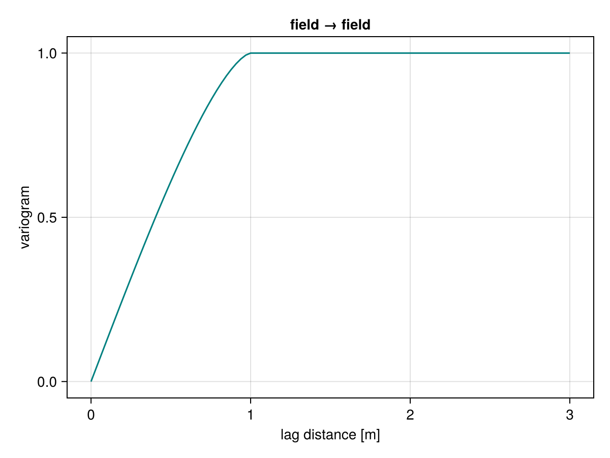
Power
\[\gamma(h) = s\left(\frac{h}{l}\right)^a + n \cdot \1_{(0,\infty)}(h)\]
GeoStatsFunctions.PowerVariogram — Type
PowerVariogram(; length, scaling, exponent, nugget)A power variogram with base length in length units, and scaling, exponent and nugget parameters.
The base length parameter serves to scale the lag h in the power variogram formula, i.e. h -> h / length.
funplot(PowerVariogram())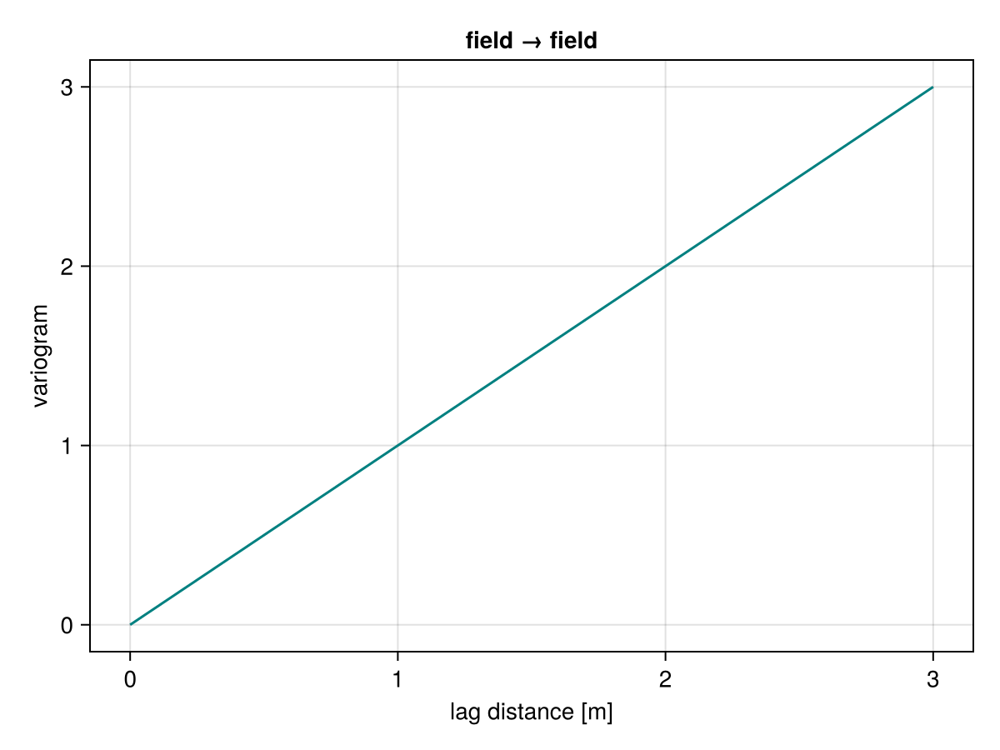
Nugget
\[\gamma(h) = n \cdot \1_{(0,\infty)}(h)\]
GeoStatsFunctions.NuggetEffect — Type
NuggetEffect(nugget)A pure nugget effect variogram.
funplot(NuggetEffect())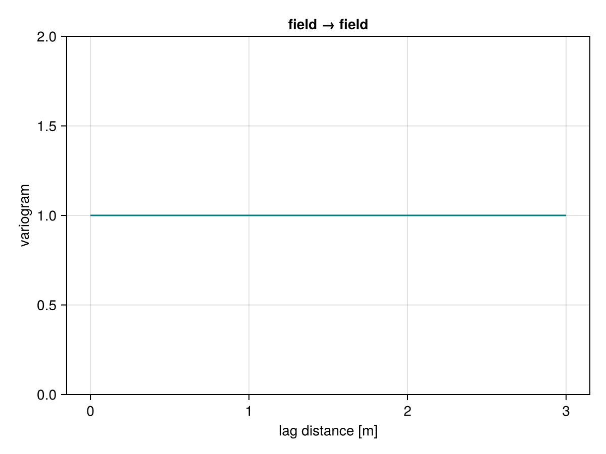